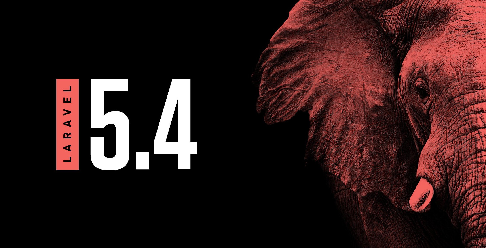

为 WEB 艺术家创造的 PHP 框架。
Laravel 5.5 将是下一个 LTS 版本，预计 7/8 月份发布

Laravel 的上一个 LTS（长期支持）版本是 Laravel 5.1，发布于 2015 年 6 月，按照对 LTS 版本的约定，两年的 bug 修复支持到今年中旬就结束了，所以今年中旬必然要出一个 LTS 后继版本，就是 Laravel 5.5。
阅读全文Laravel 5.5 将是下一个 LTS 版本，预计 7/8 月份发布

Laravel 的上一个 LTS（长期支持）版本是 Laravel 5.1，发布于 2015 年 6 月，按照对 LTS 版本的约定，两年的 bug 修复支持到今年中旬就结束了，所以今年中旬必然要出一个 LTS 后继版本，就是 Laravel 5.5。
阅读全文Laravel 5.5 将是下一个 LTS 版本，预计 7/8 月份发布

Laravel 的上一个 LTS（长期支持）版本是 Laravel 5.1，发布于 2015 年 6 月，按照对 LTS 版本的约定，两年的 bug 修复支持到今年中旬就结束了，所以今年中旬必然要出一个 LTS 后继版本，就是 Laravel 5.5。
阅读全文